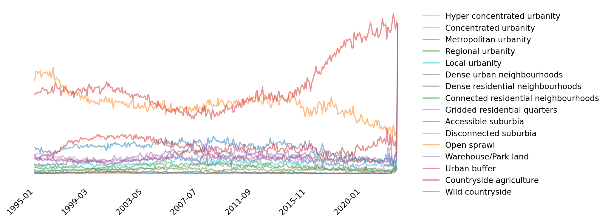
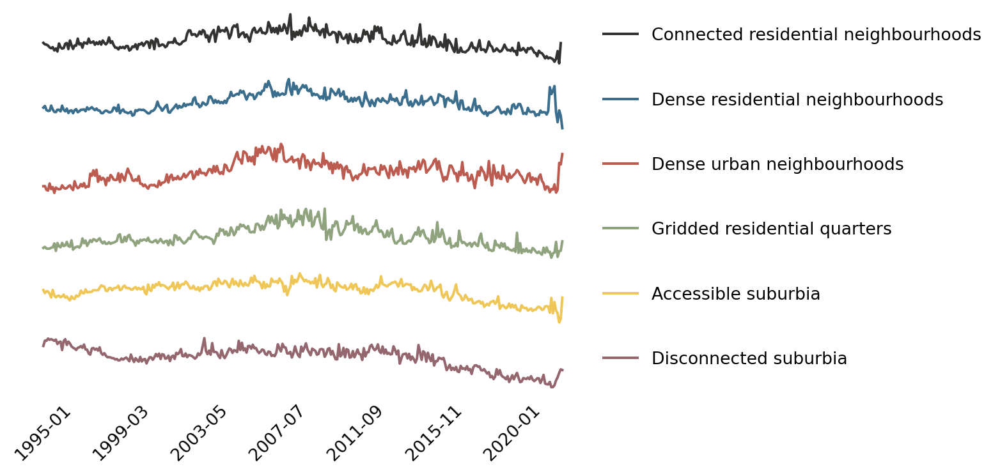

This capsule considers the temporal dimension of the Spatial Signatures (Fleischmann and Arribas-Bel 2022). It is a start to unpacking how the development of different signature type has unfolded over time. Hence, we try to answer questions such as when did most of the development that lead to dense, compact neighborhoods took place? or what has been the main spatial signature of the last decades which has most recently been shaping the landscape?
The analysis presented here relies on three datasets. First, the Spatial Signature characterisation proposed by Fleischmann and Arribas-Bel (2022) for Great Britain and based on the approach outlined in Arribas-Bel and Fleischmann (2022). Second, data on Energy Performance Certificates (EPC), released by the Department of Levelling Up, Housing and Communities.1 This is a registry of all the properties in England and Wales that have received an Energy score. As part of the process, much more information is collected, including the period in which the property was built on, which is what we use here. And third, we use Land Registry’s Price Paid data2, which records almost every3 house transaction in England and Wales since 1995.
The remainder of the document is structured in three sections: we first consider the overall distribution of properties across signatures; then we move on to evolution over the XXth Century evolution; and wrap up with a detailed zoom into the last two decades in the XXIst Century.
As a first step, we consider how prevalent different development patterns, or spatial signatures, are. To do that, Figure 1 shows the proportion of EPC properties located within each signature type, sorted by their degree of “urbanity”, with the most urban signature (“Hyper concentrated urbanity”) at the top, and the least (“Wild countryside”) at the bottom. Starting with this figure is useful because the exercise below will essentially unfold its temporal dimension to consider how this has been built over time.
Figure 1: Proportion of EPC properties by signature type
There are three important aspects to highlight from this figure. First, although conceptually very important for urban life, very few of the properties are in what we consider “urbanity”, possibly with the exception of the local variation, which is common in most cities and towns. Regional, metropolitan, and (hyper) concentrated are only present in a minority of cities and thus, in the broader context, are not very relevant. Second, we can observe two peaks of signatures that group two distinct types of development. One around more compact neighborhoods, with “Dense residential neighborhoods” as its most common type, and another one on more suburban development with “Open sprawl” and “Urban buffer” as the most common signatures in the entire set. This has important implications when we are trying to understand in what context most housing properties are located, pointint towards one with lower density and less connected structure. Third, despite being the most prominent area-wise, “Countryside agriculture” and “Wild countryside” have very few properties. This is less counterintuitive than it first appears when one considers the main characteristics of these signatures are being home to functions that do not imply human residences.
The long view
The first approach to unfolding the temporal dimension of Figure 1 takes a long-term view. We use the age column in the EPC dataset and re-aggregate it in periods of, roughly, 15 to 20 years. Figure 2 displays a heatmap with the number of properties built in each period and located in areas of each signature. This first crude overview already provides interesting insight. The highest concentration of properties corresponds with houses built in the immediate post-war years (ca. 1950-75) in locations labelled as Accessible suburbia, Open sprawl, and Urban buffer. This trend represents the suburbanisation that occurred shortly after WW-II and that still characterises today’s housing stock.
Figure 2: EPC properties by signature type over time periods
Figure 3 makes the absolute view in Figure 2 relative to each spatial signature. The heatmap is constructed so that it represents the proportion of all the houses in a signature type that correspond to each time period. This transformation allows us to see more detail in signatures that had too small counts to be picked up visually in the previous figure. Of particular interest are all the “urbanity” classes, which represent the town centres and most urban cores of British cities. In almost all cases, these are the oldest areas as they represent the kernel where the city or town was originally founded. In almost all cases too (with the exception, for example, of cities that were heavily bombed during WW-II), they are all made up of older stock that has been gradually upgraded rather than replaced. This is what is represented in Figure 3 by the darker yellow (higher values) in its top left corner. The figure also makes clear that, even signature by signature, most of the housing stock in Britain was built before 1975.
Figure 3: Proportion of EPC properties by signature type over time periods (rows add up to 100%)
Our final look at the period in which the building stock was built considers another relative view, but this time by period. Figure 4 represents the proportion of all houses built in a given period that is located in an area with a particular spatial signature. Here we come back to the patterns we initially saw in Figure 1, but this time we can see more detail on the relevance of each period for signatures (which was obscured before by the high numbers for some periods). The focus here thus is back on the more suburban signatures (Open sprawl, Urban buffer) but we can now see how the relevance of those types actually grows over time. Before, we established that the peak period was 1950-1975. This is when the vast majority of the current stock was built, and it was developed following suburban patterns. What this figure makes clear is that the suburban nature of development actually grew over time well into our present day. Even though the total number of new houses built in Britain since 1975 was not as high as before, the proportion of them that were in suburban areas has steadily grown.
p = lr.plot( figsize=(9, 4), subplots=False, sharex=True, sharey=True, alpha=0.5)handles, labels = plt.gca().get_legend_handles_labels()order = pandas.Series(range(len(labels)), index=labels)[type_order[::-1]].tolist()plt.legend( [handles[idx] for idx in order],[labels[idx] for idx in order], bbox_to_anchor=(1,1), loc="upper left", frameon=False)p.set_frame_on(False)p.set_yticklabels([])p.set_yticks([])p.set_xlabel('')p.tick_params(bottom=False)p.set_xticklabels(p.get_xticklabels(), rotation =45, ha="right");
Land Registry new properties by signature type
Code
p = lr.T.div(lr.T.sum()).T.plot( figsize=(9, 4), subplots=False, sharex=True, sharey=True, alpha=0.5)handles, labels = plt.gca().get_legend_handles_labels()order = pandas.Series(range(len(labels)), index=labels)[type_order[::-1]].tolist()plt.legend( [handles[idx] for idx in order],[labels[idx] for idx in order], bbox_to_anchor=(1,1), loc="upper left", frameon=False)p.set_frame_on(False)p.set_yticklabels([])p.set_yticks([])p.set_xlabel('')p.tick_params(bottom=False)p.set_xticklabels(p.get_xticklabels(), rotation =45, ha="right");

Yearly proportion of Land Registry new properties by signature type
Code
p = ( lr.T.div(lr.T.sum()).T [['Open sprawl', 'Urban buffer']] .multiply(100) .plot.line( figsize=(9, 4), color=(ugg.HEX[4], ugg.HEX[3]) ))plt.legend(loc="upper left", frameon=False)p.set_frame_on(False)p.tick_params(left =False, bottom=False)p.set_ylabel('% of new builds in signature')p.set_xlabel('')p.set_xticklabels(p.get_xticklabels(), rotation =45, ha="right");
Yearly proportion of Land Registry new properties
Code
p = ( lr.T.div(lr.T.sum()).T [[i for i in lr.columns if ('urbanity'in i.lower())]] .multiply(100) .plot.line( figsize=(9, 4), color=ugg.HEX[:5], ))p.set_frame_on(False)p.tick_params(left =False, bottom=False)p.set_ylabel('% of new builds in signature')p.set_xlabel('')p.legend(frameon=False)p.set_xticklabels(p.get_xticklabels(), rotation =45, ha="right");
Yearly proportion of Land Registry new properties
Code
types = ( [i for i in lr.columns if'neighbourhoods'in i.lower()] + ['Gridded residential quarters'] + [i for i in lr.columns if'suburbia'in i.lower()])ps = ( lr.T.div(lr.T.sum()).T [types] .multiply(100) .iloc[:-1, :] .plot.line( figsize=(6, 4), color=ugg.HEX, subplots=True, rot=45 ))for p in ps: p.set_frame_on(False) p.tick_params(left =False, bottom=False) p.set_yticks([]) p.set_xlabel('') p.legend( loc="upper left", bbox_to_anchor=(1,1), frameon=False );

Yearly proportion of Land Registry new properties
References
Arribas-Bel, Daniel, and Martin Fleischmann. 2022. “Spatial Signatures - Understanding (Urban) Spaces Through Form and Function.”Habitat International 128: 102641. https://doi.org/https://doi.org/10.1016/j.habitatint.2022.102641.
Fleischmann, Martin, and Daniel Arribas-Bel. 2022. “Geographical Characterisation of British Urban Form and Function Using the Spatial Signatures Framework.”Scientific Data 9 (1): 1–15.